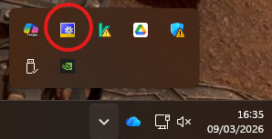

Instalación y entorno de trabajo
Requisitos del sistema
- Sistema operativo: Windows 10 / Windows 11 (64 bits)
- Microsoft Visual Studio 2019 o 2022 (Community, Professional o Enterprise) o la shell de Visual Studio incluida en el instalador de TwinCAT
- Al menos 4 GB de RAM (8 GB recomendado)
- Conexión a internet para la descarga
Descarga e instalación
- Accede a https://www.beckhoff.com → sección Download → TwinCAT 3.
- Descarga el instalador TC31-Full-Setup (versión más reciente estable).
- Ejecuta el instalador con permisos de administrador y sigue el asistente. El propio instalador detecta si tienes Visual Studio y se integra automáticamente.
- Al finalizar, reinicia el equipo. En la barra de tareas de Windows aparecerá el icono de TwinCAT (un engranaje azul/verde).

Icono de TwinCAT en modo configuración en la barra de tareas de WindowsModos de TwinCAT
TwinCAT opera en dos modos que se indican mediante el color del icono tanto en la barra de tareas inferior de Windows como en la barra de herramientas superior en TwinCAT :
- 🔵 Config Mode (azul): el runtime está detenido. Es el modo de edición y configuración.
- 🟢 Run Mode (verde): el runtime está en ejecución. El programa PLC se está ejecutando.
Para cambiar de modo, haz clic derecho sobre el icono de TwinCAT en la barra de tareas de Windows y selecciona la opción deseada o bien haz clic directamente en el icono deseado en la barra de herramientas de TwinCAT.
Modos de TwinCAT